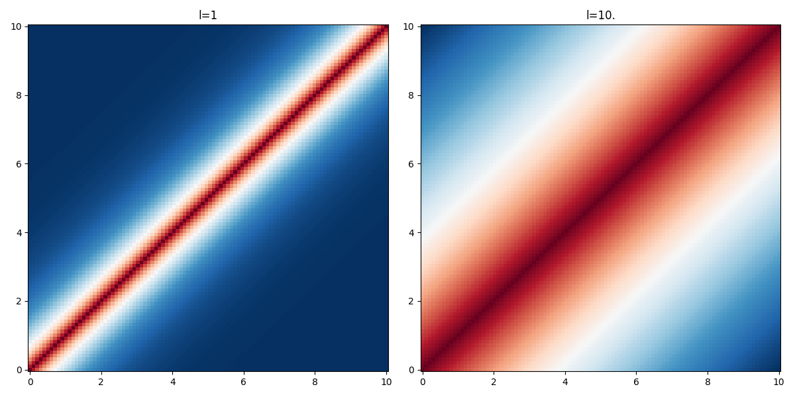

Ornstein-Uhlenbeck kernel
The Laplacian function kernel defines a stationary gaussian process, the Ornstein-Uhlenbeck process:
\begin{align*} \displaystyle K(x, x') &= \sigma^2\,\exp\left(-\frac{|d|}{l}\right),\quad d=x'-x \end{align*}
Unlike the Wiener process, this process is mean reverting and admits a stationary probability distribution. It is convenient to model time-series. It can be seen as a noisy relaxation model. (cite:rasmussen2003 p.212)
import numpy as np from matplotlib import pyplot as plt def kernel(x1, x2, l2): return np.exp(-np.abs(x1-x2) / l2)
The parameter \(l\) is the characteristic lengthscale of the process. As one can see on the figure below, the larger the value of \(l\) the "further" the kernel takes non-negligible values.
xx, yy = np.meshgrid(np.linspace(0, 10, 100), np.linspace(0, 10, 100)) values_1 = kernel(xx.ravel(), yy.ravel(), 1.).reshape(xx.shape) values_10 = kernel(xx.ravel(), yy.ravel(), 10.).reshape(xx.shape) fig, axes = plt.subplots(figsize=(12,6), ncols=2) axes[0].pcolormesh(xx, yy, values_1, cmap=plt.cm.RdBu_r) axes[0].set_title("l=1") axes[1].pcolormesh(xx, yy, values_10, cmap=plt.cm.RdBu_r) axes[1].set_title("l=10.") plt.tight_layout() fname = f"images/kernel-ornstein-heatmap.png" plt.savefig(fname) fname
